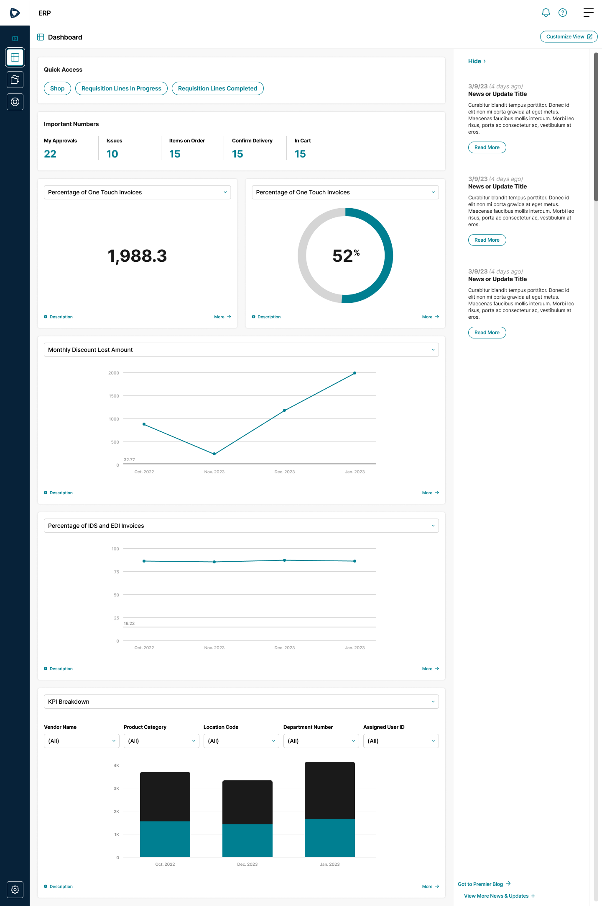
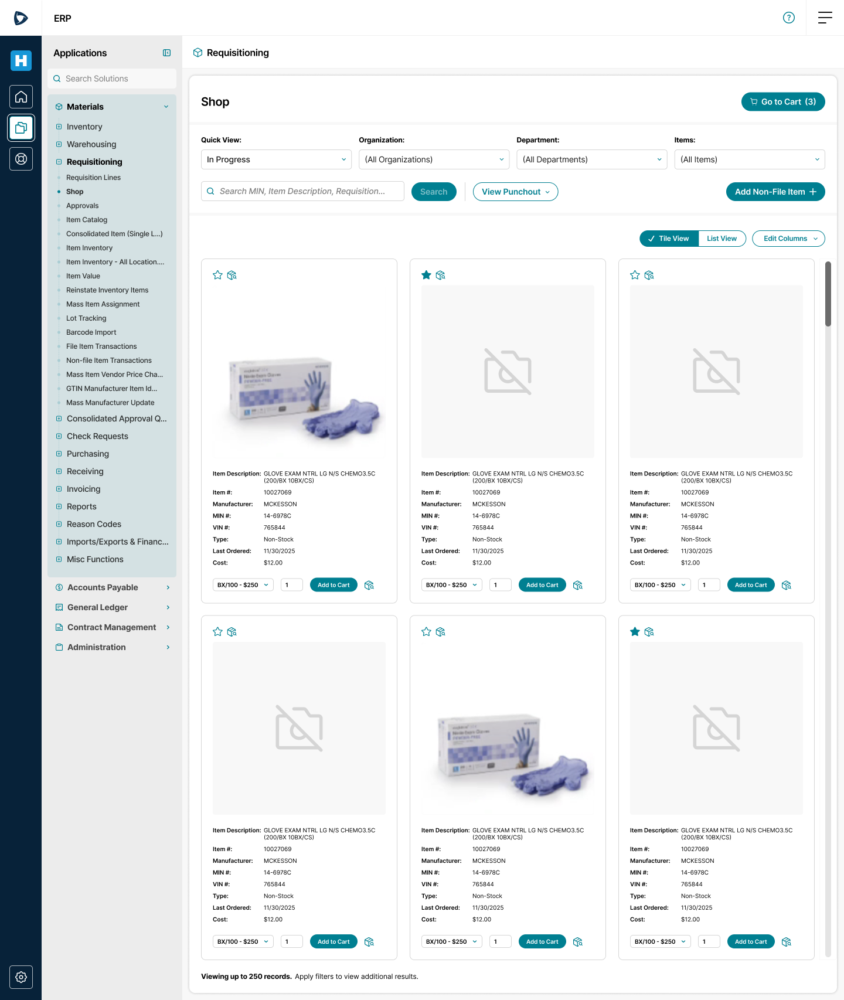
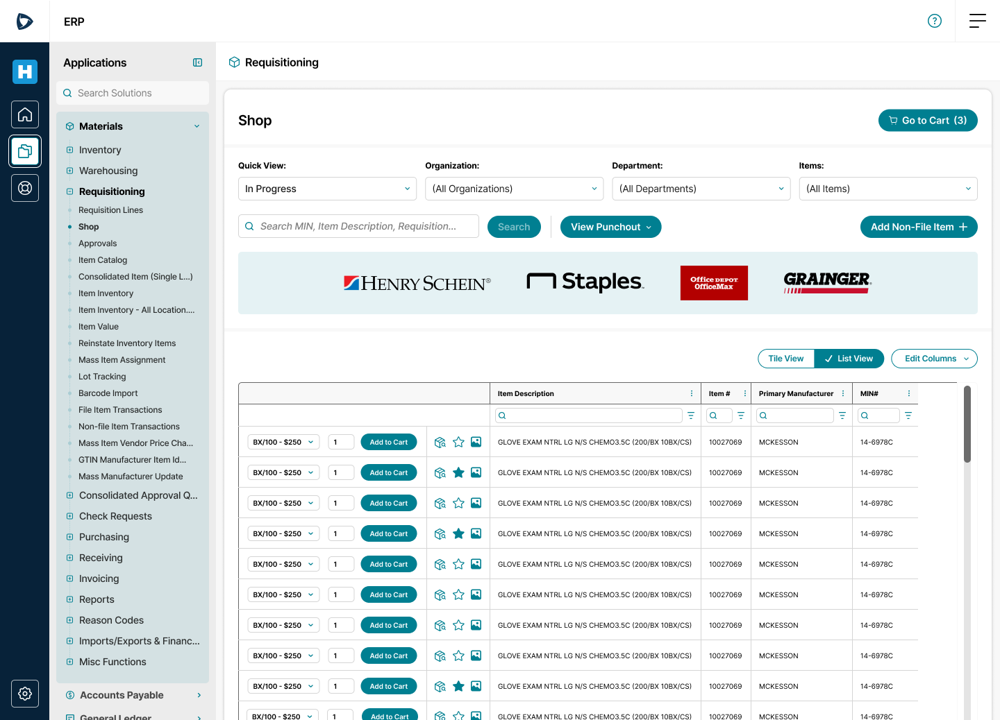
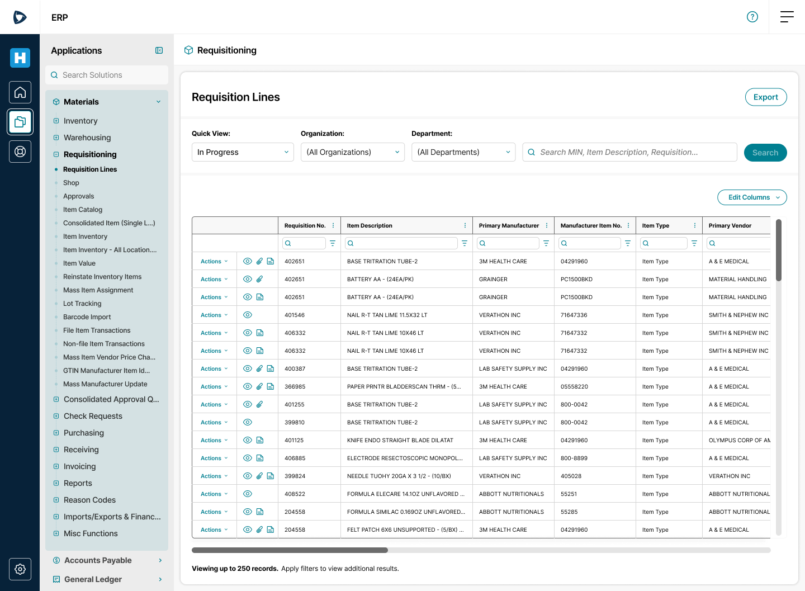
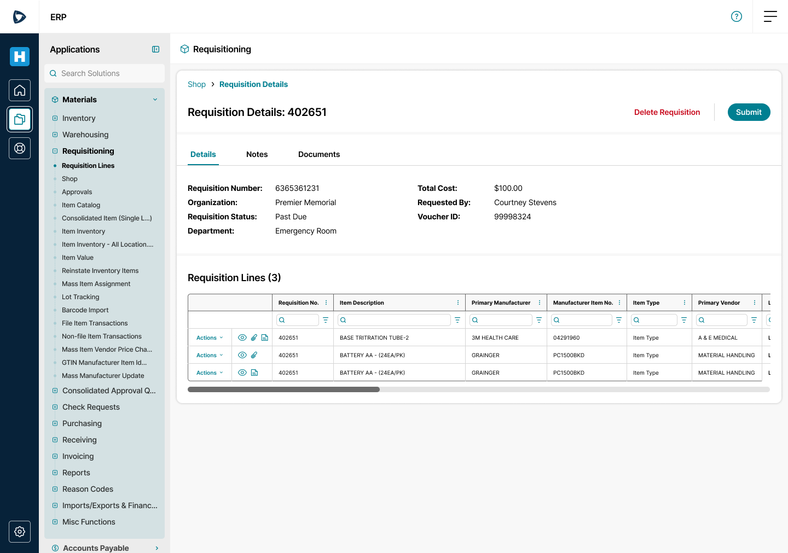
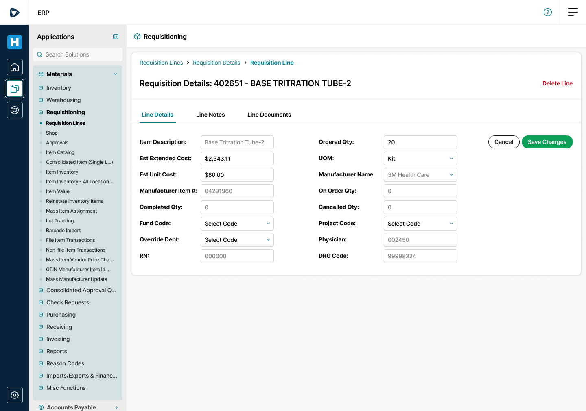
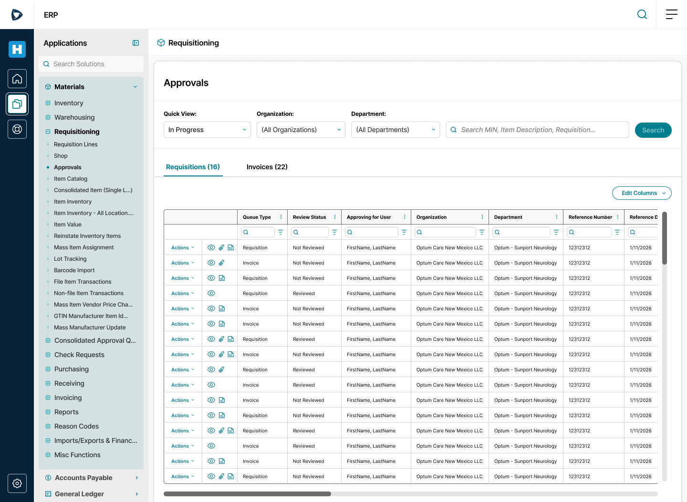
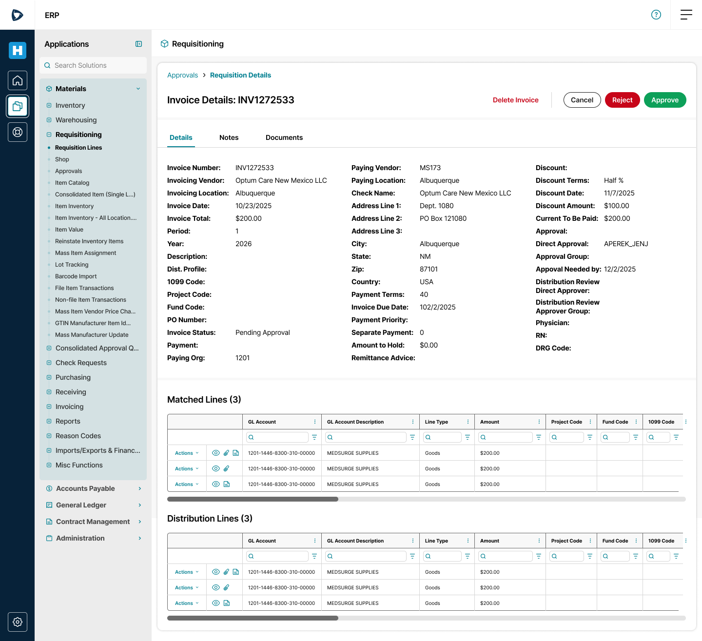
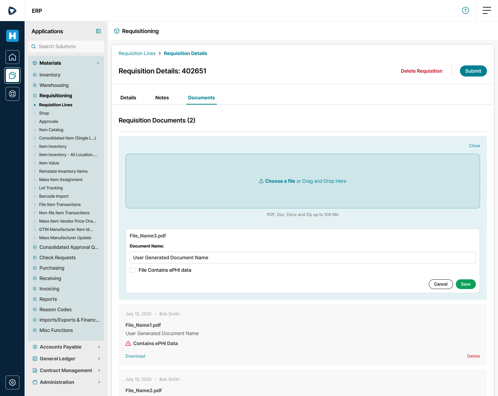
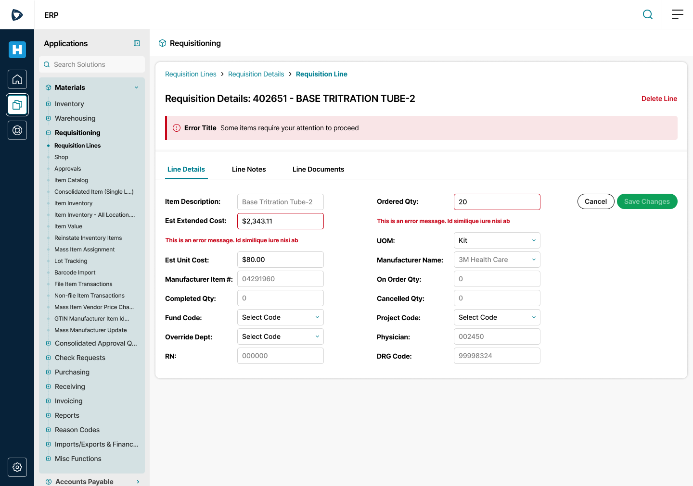

Bringing a legacy procure-to-pay ERP onto the Premier Design System. The work standardized components, screens and workflows, and added new pharmacy purchasing capabilities built in partnership with Optum as the pilot client.
Give the ERP a fresh, modern look and feel aligned to the Premier Design System.
Replace one-off screens with shared components, page templates and workflow patterns.
Add pharmacy capabilities so customers could purchase and manage pharmacological products.
How might we make a dense, decades-deep ERP feel like one coherent, modern product without losing the power its users depend on?
Mapped the procure-to-pay flows and laid out screen structure before any visual design.
Built every screen from Premier Design System components, covering edit, empty, loading and error states.
Linked the screens into working prototypes for stakeholder reviews and pilot validation with Optum.
A grid, a filter bar or a details page should behave the same everywhere it appears.
Every screen is assembled from Premier Design System components, not custom one-offs.
Preserve the data users depend on while giving it clear hierarchy and room to breathe.
Editing, empty results, loading and errors are part of the workflow, not afterthoughts.
The new home screen gives quick access to the most-used workflows and surfaces the numbers people check daily: approvals, issues, items on order and items in cart. Configurable KPI cards replace scattered reports.

Shopping moved from a raw item lookup to a familiar catalog experience. Users can switch between a visual tile view and a dense list view. Supplier punchout to partners like Henry Schein, Staples, Office Depot and Grainger sits right in the page, alongside a path for non-file items.


Requisition lines now use the standard data grid, with column filters, row actions and quick icons for viewing, attachments and notes. Requisition details follow one template: a summary up top, then Details, Notes and Documents tabs.



Approvers work from one queue split into requisitions and invoices. Invoice details bring header information, matched lines and distribution lines onto a single page, with approve and reject actions always in reach.


Line details capture physician, RN and DRG code, so purchases can be traced back to the clinical context behind them.
Uploads can be flagged as containing ePHI, and flagged files are clearly marked wherever they appear.
Flows were designed and reviewed with Optum as the pilot client, grounding decisions in a real deployment.


| Area | Status |
|---|---|
| Design System alignment across P2P workflows | Designed and prototyped |
| Pharmacy purchasing capabilities | In pilot with Optum |
| Outcome metrics | To be measured |
When every grid, form and details page behaves the same, users learn the product once instead of module by module.
Applying the Premier Design System to dense ERP screens tested the components in ways simpler products never did.
Designing pharmacy capabilities with Optum kept the work grounded in real requirements, not assumptions.
Clear errors, empty states and loading feedback matter most in high-stakes enterprise workflows.